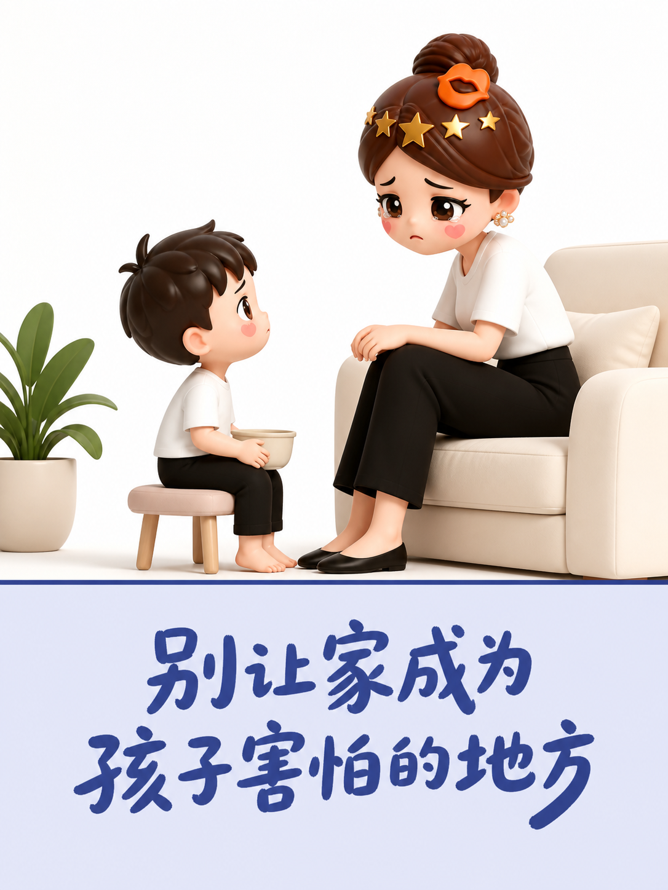
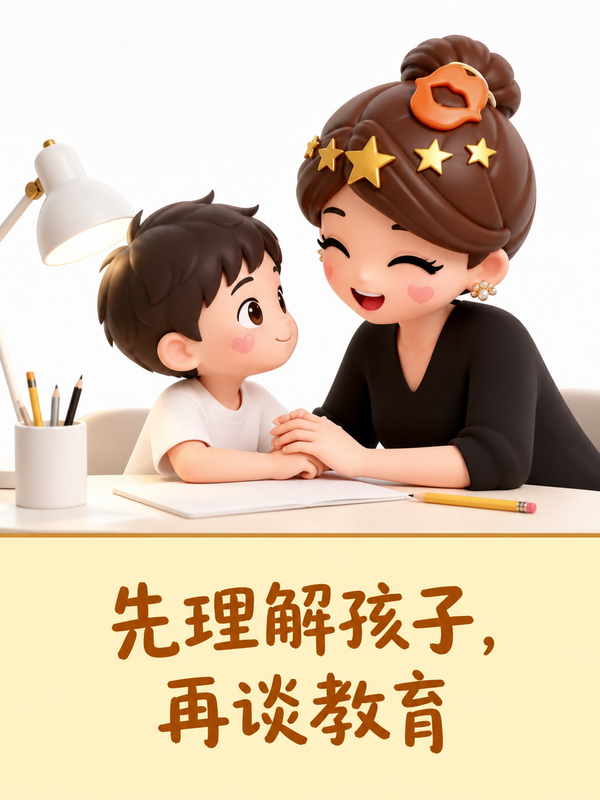
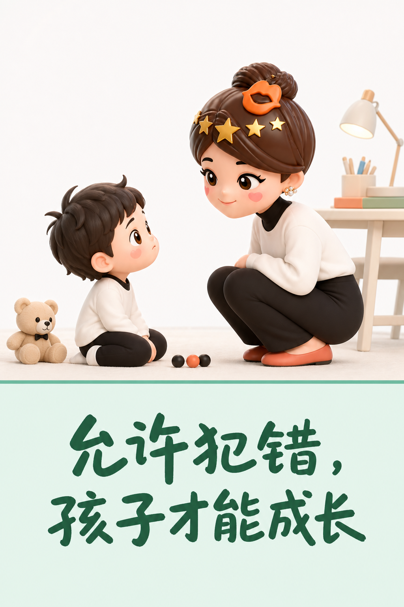
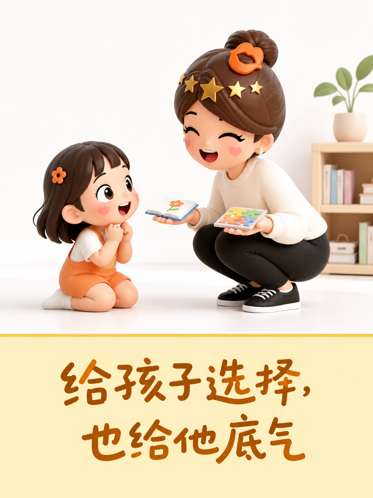

真正的托举，是让孩子敢做自己
有些伤害披着“为你好”的外衣，家却不再安全。
语言会进入孩子心里
嘲讽、否定和翻旧账听得多了，孩子会把“我不行”当成事实。严格若靠羞辱维持，留下的往往是自卑、敏感和讨好。

控制不等于保护
替孩子决定一切，不准反驳、不许犯错，看似省心，却夺走了他判断和承担的机会。长期被压制，可能退缩，也可能激烈反抗。


托举是把力量还给孩子
养育不是要求永远听话，而是陪孩子认识情绪、承担后果、练习选择。父母少一点打压，多一些倾听和尊重，家才会成为他受挫后敢回来的地方。
别做最早的否定者，要做最稳的支持者。
